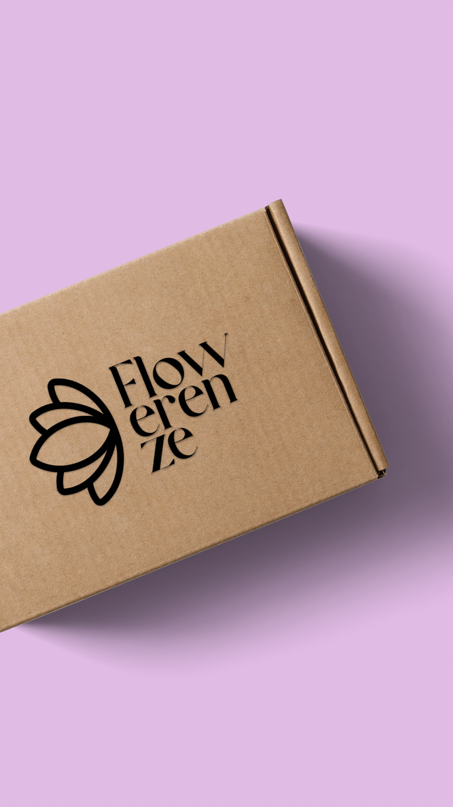
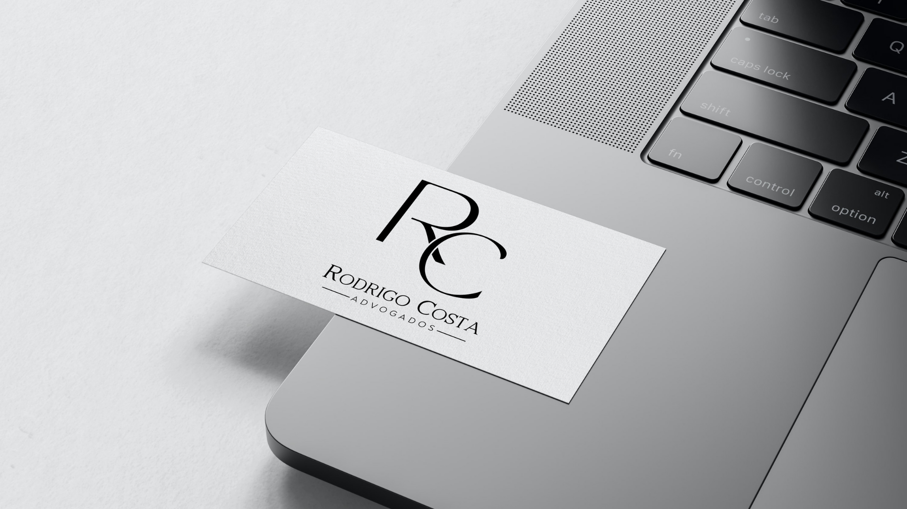
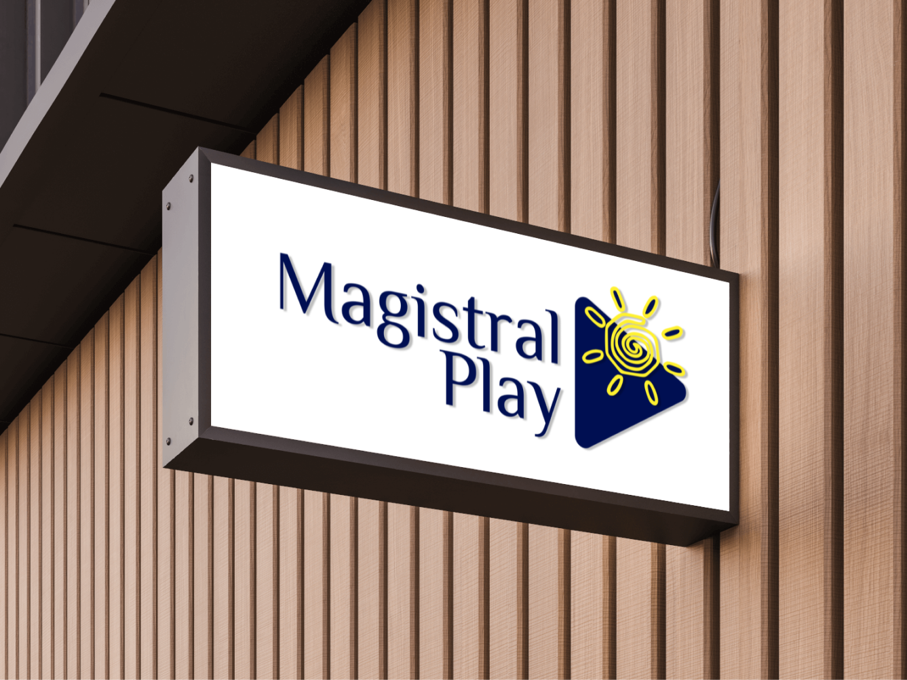
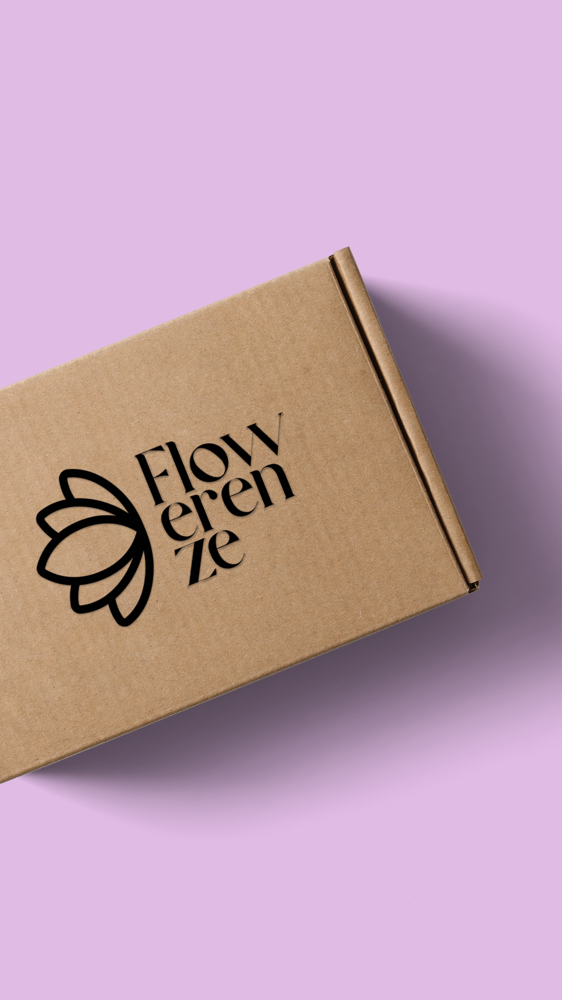
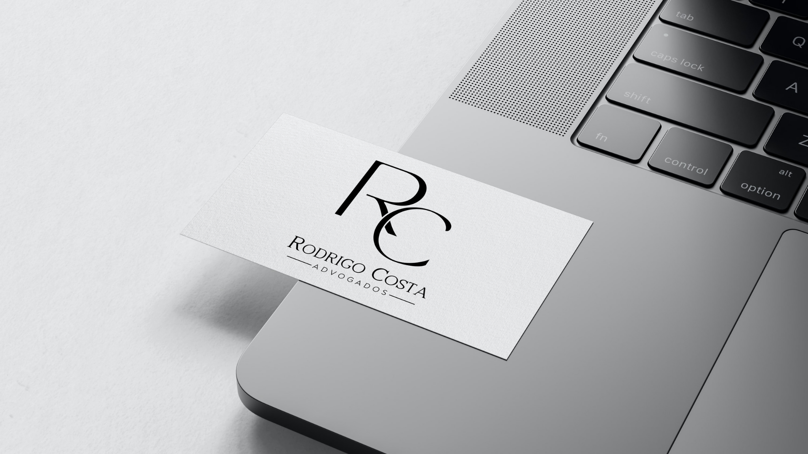
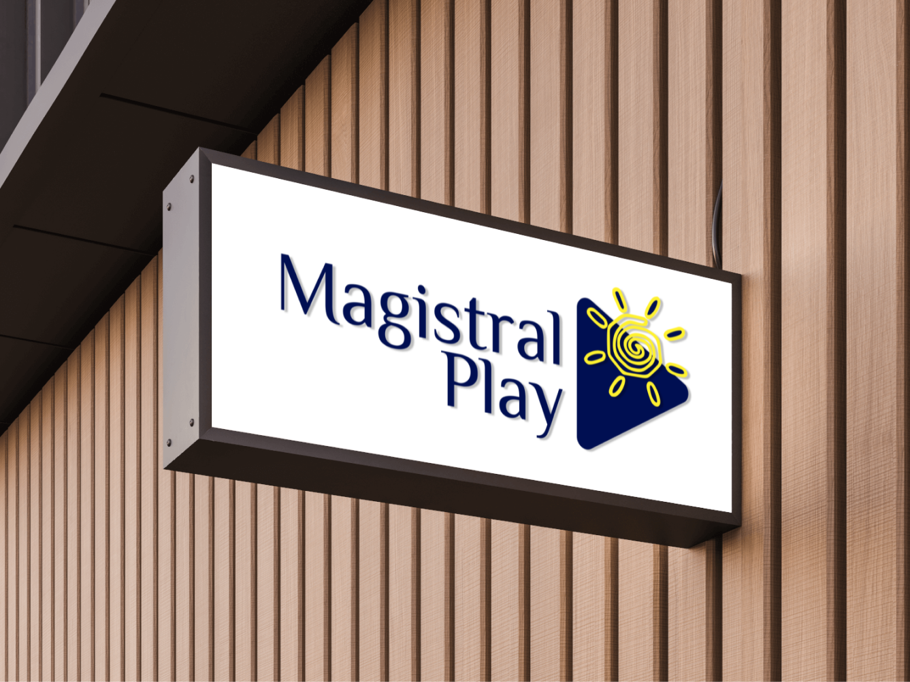

Com simplicidade e elegância, esses designs refletem a essência de marcas e empresas de forma marcante. Cada logo captura a atenção com sua combinação cuidadosamente escolhida de cores, transmitindo uma mensagem clara e impactante. O minimalismo dessas criações ressalta a beleza da simplicidade, enquanto as cores proporcionam contraste e equilíbrio visual. Esses logos são testemunhos do poder do design minimalista e sua capacidade de transmitir uma identidade forte com uma abordagem simples.
 




